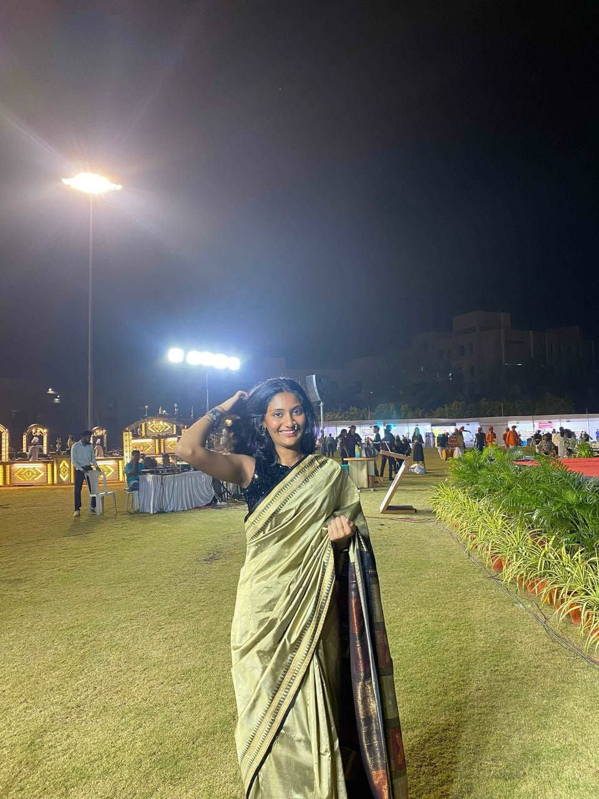
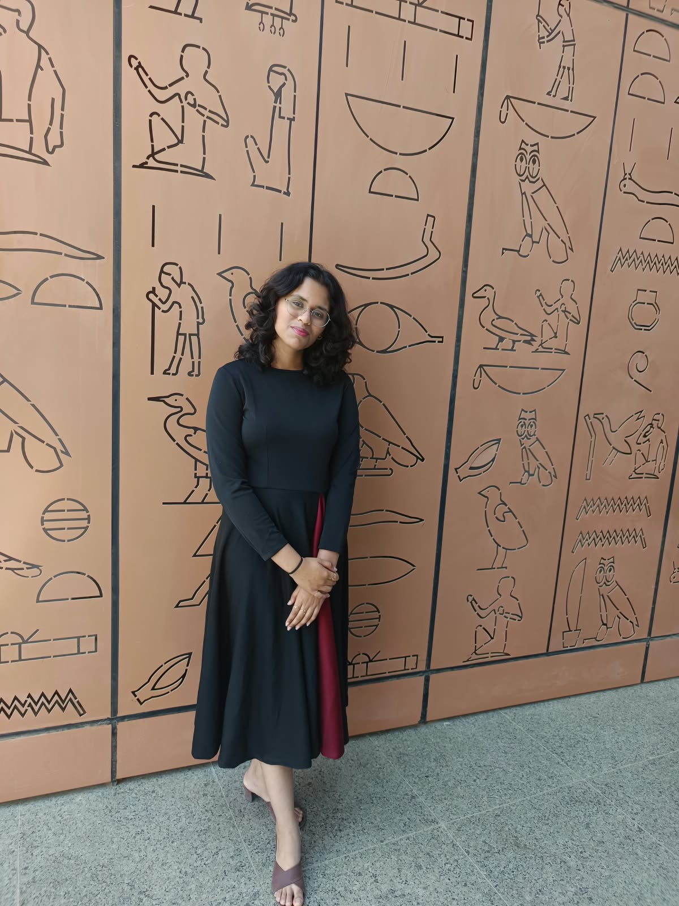
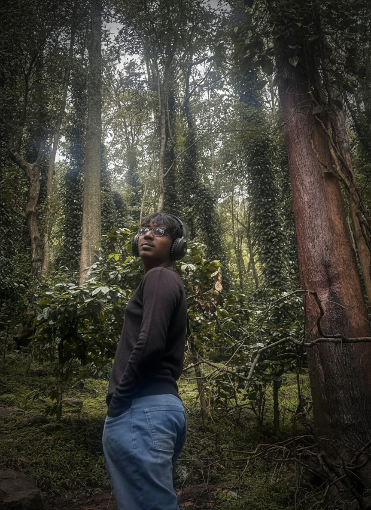

ÉLAN / THE FOUNDING TEAM
The people
behind Élan.
One founder. Three co-founders.
A shared first chapter.
Meet the people behind Élan and its 2026 edition.
01 / FOUNDER
Akshit
Parmar.
Director · Élan 2026
Chess, coastlines and a curiosity about the universe.
I’m Akshit Parmar, the founder of Élan and the Director of its 2026 edition. I enjoy chess, gaming and spending time at the beach. I’m also aiming to become an astrophysicist—a goal that reflects my curiosity about the universe and how it works.
Élan has been a dream project of mine. Getting to bring it to life made the first edition especially personal. More than anything, I hope everyone who joined us enjoyed being part of it and left with something they’ll remember fondly.

02 / CO-FOUNDER
Sakshi
Baldawa.
Assistant Director · Élan 2026
Curiosity in business. Creativity in expression.
Sakshi Baldawa is a co-founder of Élan Summit and served as Assistant Director of its 2026 edition. With a keen interest in finance, business and economics, she enjoys exploring new ideas, connecting with people and turning thought into action.
Dance is another expression of that curiosity and energy. Alongside her academic interests and leadership work, it gives her space to create and express herself. She values initiative, collaboration and continuous learning—bringing ambition and imagination to the experiences she helps shape.

03 / CO-FOUNDER
Prachi
Belagali.
One of the Heads of All Departments · Élan 2026
Curious about people, perspectives and the questions in between.
I’m Prachi Belagali. I’m drawn to law and history, especially the questions they raise about people: what shapes our beliefs, why we think differently, and how another perspective can change our own. Outside academics, Taekwondo has been a big part of my life, teaching me discipline, resilience and the importance of showing up when things get difficult.
I’ve never believed learning ends at the classroom door. Some of my most meaningful lessons have come from conversations, disagreements and experiences that challenged what I thought I knew. I’m still figuring things out, and I enjoy that uncertainty.
As a co-founder of Élan and one of the Heads of All Departments for its 2026 edition, I had the chance to exchange ideas with people who see the world differently. What stayed with me were the questions worth thinking about long after those conversations ended.

04 / CO-FOUNDER
Jacinth
Jebaraj.
Élan Summit
A co-founder of Élan.
Jacinth Jebaraj is a co-founder of Élan Summit, part of the founding team with founder Akshit Parmar and fellow co-founders Sakshi Baldawa and Prachi Belagali.